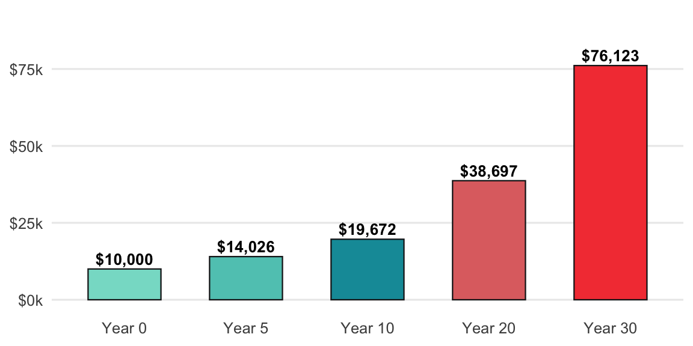
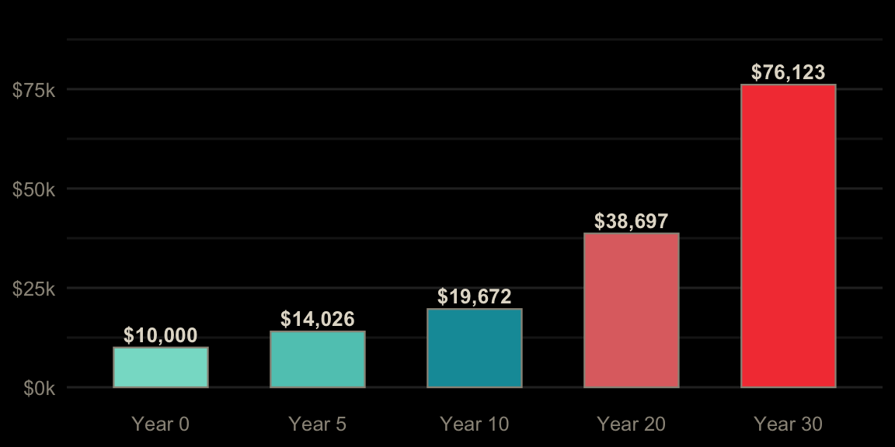
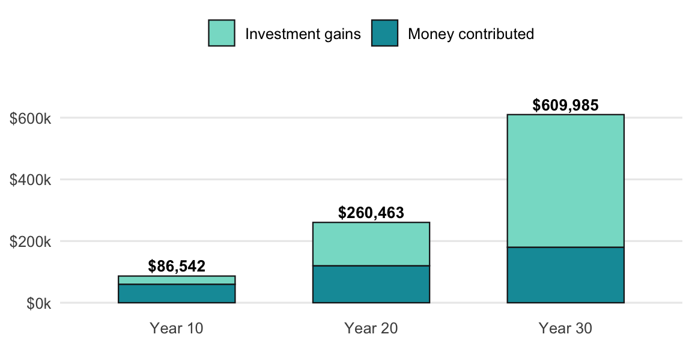
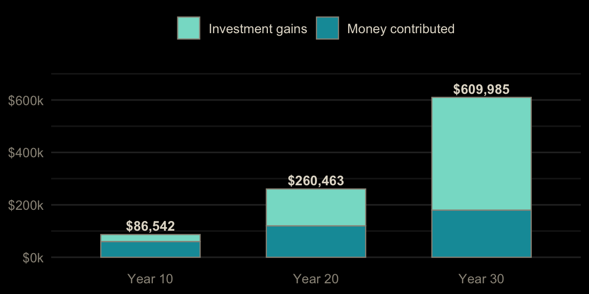
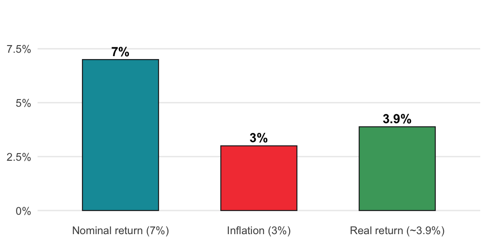
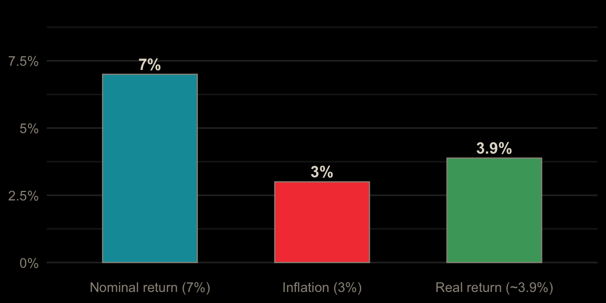

Each topic starts with a real scenario and a bar model, then three levels of exercises. Level 1 (Guided) fills in the blanks of a finished function. Level 2 (Practice) applies it to new numbers. Level 3 (Challenge) asks a new question with little scaffolding. The R and Python exercises run in your browser: click Run Code to try, Submit Answer to check, and use the hint or solution if you get stuck. Excel exercises have a solution you can reveal.
Each year’s growth is applied to a bigger base, so the balance curves upward instead of rising in a straight line.
Formula: FV = PV × (1 + r)^n
Rule of 72: Years to double ≈ 72 ÷ annual return %
Example: $10,000 at 7% for 10 years grows to about $19,672, and at 7% money doubles roughly every 10 years.


The Rule of 72 is a shortcut. The exact doubling time is log(2) ÷ log(1 + r). The shortcut is very close for returns between about 4% and 12%, and drifts further off at the extremes.
Read the result as “what one deposit becomes if you leave it alone.” At 7%, the Rule of 72 says 10.3 years and the exact answer is 10.2 years, so the shortcut is good enough for planning.
Fill in the blanks to finish future_value(), then find what $10,000 grows to in 10 years at 7%.
Put the amount in A2 (10000), the rate in B2 (0.07), and years in C2 (10). Find the future value in D2.
=A2*(1+B2)^C2This returns $19,671.51. =FV(B2, C2, 0, -A2) gives the same answer.
#| exercise: fv_1_py
def future_value(present_value, rate, years):
return present_value * (1 + ______) ** ______
future_value(10000, 0.07, 10)Grow by (1 + rate) once for every year.
Solution.
def future_value(present_value, rate, years):
return present_value * (1 + rate) ** years
future_value(10000, 0.07, 10)#| exercise: fv_1_py
#| check: true
if result is not None and abs(result - 19671.513573) < 0.01:
feedback = {"correct": True, "message": "Right: about $19,672. It roughly doubled in 10 years."}
else:
feedback = {"correct": False, "message": "Not quite. Raise (1 + rate) to the number of years."}
feedback#| exercise: fv_1_r
future_value <- function(present_value, rate, years) {
present_value * (1 + ______)^______
}
future_value(10000, 0.07, 10)Grow by (1 + rate) once for every year.
Solution.
future_value <- function(present_value, rate, years) {
present_value * (1 + rate)^years
}
future_value(10000, 0.07, 10)#| exercise: fv_1_r
#| check: true
if (isTRUE(abs(as.numeric(.result) - 19671.513573) < 0.01)) {
list(correct = TRUE, message = "Right: about $19,672. It roughly doubled in 10 years.")
} else {
list(correct = FALSE, message = "Not quite. Raise (1 + rate) to the number of years.")
}Leave the same $10,000 invested for 40 years at 7%. What is it worth?
Change C2 to 40.
The same formula returns $149,744.58, about four doublings.
#| exercise: fv_2_py
#| setup: true
def future_value(present_value, rate, years):
return present_value * (1 + rate) ** years#| exercise: fv_2_py
future_value(______)Same amount and rate, 40 years.
Solution.
future_value(10000, 0.07, 40)#| exercise: fv_2_py
#| check: true
if result is not None and abs(result - 149744.578392) < 0.01:
feedback = {"correct": True, "message": "Right: about $150,000. Four doublings: 10k, 20k, 40k, 80k, 160k (roughly)."}
else:
feedback = {"correct": False, "message": "Not quite. Use 40 years."}
feedback#| exercise: fv_2_r
#| setup: true
future_value <- function(present_value, rate, years) {
present_value * (1 + rate)^years
}#| exercise: fv_2_r
future_value(______)Same amount and rate, 40 years.
Solution.
future_value(10000, 0.07, 40)#| exercise: fv_2_r
#| check: true
if (isTRUE(abs(as.numeric(.result) - 149744.578392) < 0.01)) {
list(correct = TRUE, message = "Right: about $150,000. Four doublings: 10k, 20k, 40k, 80k, 160k (roughly).")
} else {
list(correct = FALSE, message = "Not quite. Use 40 years.")
}The Rule of 72 (72 ÷ return %) estimates doubling time. The exact time is ln(2) ÷ ln(1 + r). For whole-number returns from 1% to 15%, at which return is the rule closest to exact?
Put returns 1 to 15 in A2:A16. Find the rule in B, the exact time in C, and the gap in D, then the return with the smallest gap.
In B2: =72/A2. In C2: =LN(2)/LN(1+A2/100). In D2: =ABS(B2-C2). Fill down, then:
=INDEX(A2:A16, MATCH(MIN(D2:D16), D2:D16, 0))The answer is 8%: 9 years by the rule, 9.006 exact.
#| exercise: fv_3_py
import math
returns = range(1, 16)
# return with the smallest gap between 72 / r and the exact doubling timeThe exact time is math.log(2) / math.log(1 + r / 100). Use min(returns, key=lambda r: abs(...)).
Solution.
import math
returns = range(1, 16)
min(returns, key=lambda r: abs(72 / r - math.log(2) / math.log(1 + r / 100)))#| exercise: fv_3_py
#| check: true
if result is not None and abs(result - 8) < 0.001:
feedback = {"correct": True, "message": "Right: 8%. The rule is tuned for returns near 8%."}
else:
feedback = {"correct": False, "message": "Not quite. Compare 72 / r with log(2) / log(1 + r/100)."}
feedback#| exercise: fv_3_r
returns <- 1:15
# return with the smallest gap between 72 / r and the exact doubling timeThe exact time is log(2) / log(1 + returns / 100). Find the gap for every return, then returns[which.min(gap)].
Solution.
returns <- 1:15
gap <- abs(72 / returns - log(2) / log(1 + returns / 100))
returns[which.min(gap)]#| exercise: fv_3_r
#| check: true
if (isTRUE(abs(as.numeric(.result) - 8) < 0.001)) {
list(correct = TRUE, message = "Right: 8%. The rule is tuned for returns near 8%.")
} else {
list(correct = FALSE, message = "Not quite. Compare 72 / r with log(2) / log(1 + r/100).")
}Investing a fixed amount every month builds wealth two ways: the money you put in, and the growth on everything you put in before.
Formula: FV = PMT × [((1 + r)^n − 1) ÷ r]
Example: $500/month for 30 years (360 months) at a 7% annual return (about 0.583% per month) grows to about $610,000, and only $180,000 of that is money you put in.


Starting earlier matters more than putting in more. The second example compares the same $500/month started at 25, 35, and 45, all ending at 65. The book’s recap number ($50/month for 30 years is about $61,000) is the same math at one tenth the size.
Read the result as two layers. At 30 years, about 70% of the $610,000 is growth, not deposits. Starting at 25 instead of 45 more than quadruples the ending balance while only doubling what you put in.
Fill in the blanks to finish future_value_series(), then find what $500 a month grows to in 30 years at a 7% yearly return.
Find the value in one formula with a monthly rate and 360 months.
=FV(7%/12, 360, -500)This returns $609,985.50.
#| exercise: series_1_py
def future_value_series(contribution, rate, periods):
return contribution * (((1 + rate) ** ______ - 1) / ______)
future_value_series(500, 0.07 / 12, 30 * 12)The growth factor is raised to the number of periods, and divided by the rate.
Solution.
def future_value_series(contribution, rate, periods):
return contribution * (((1 + rate) ** periods - 1) / rate)
future_value_series(500, 0.07 / 12, 30 * 12)#| exercise: series_1_py
#| check: true
if result is not None and abs(result - 609985.497888) < 0.01:
feedback = {"correct": True, "message": "Right: about $610,000, from $180,000 put in."}
else:
feedback = {"correct": False, "message": "Not quite. Use periods and rate."}
feedback#| exercise: series_1_r
future_value_series <- function(contribution, rate, periods) {
contribution * (((1 + rate)^______ - 1) / ______)
}
future_value_series(500, 0.07 / 12, 30 * 12)The growth factor is raised to the number of periods, and divided by the rate.
Solution.
future_value_series <- function(contribution, rate, periods) {
contribution * (((1 + rate)^periods - 1) / rate)
}
future_value_series(500, 0.07 / 12, 30 * 12)#| exercise: series_1_r
#| check: true
if (isTRUE(abs(as.numeric(.result) - 609985.497888) < 0.01)) {
list(correct = TRUE, message = "Right: about $610,000, from $180,000 put in.")
} else {
list(correct = FALSE, message = "Not quite. Use periods and rate.")
}Two people invest $500 a month at 7% until 65. One starts at 25 (40 years), the other at 35 (30 years). How much more does the early starter end with?
Find both values and the difference.
=FV(7%/12, 480, -500) - FV(7%/12, 360, -500)This returns $702,421.20, for only $60,000 more put in.
#| exercise: series_2_py
#| setup: true
def future_value_series(contribution, rate, periods):
return contribution * (((1 + rate) ** periods - 1) / rate)#| exercise: series_2_py
m = 0.07 / 12
future_value_series(500, m, ______) - future_value_series(500, m, ______)40 years is 480 months; 30 years is 360.
Solution.
m = 0.07 / 12
future_value_series(500, m, 480) - future_value_series(500, m, 360)#| exercise: series_2_py
#| check: true
if result is not None and abs(result - 702421.201279) < 0.01:
feedback = {"correct": True, "message": "Right: about $702,000 more. Ten extra years more than doubles the total."}
else:
feedback = {"correct": False, "message": "Not quite. Count the periods in months."}
feedback#| exercise: series_2_r
#| setup: true
future_value_series <- function(contribution, rate, periods) {
contribution * (((1 + rate)^periods - 1) / rate)
}#| exercise: series_2_r
m <- 0.07 / 12
future_value_series(500, m, ______) - future_value_series(500, m, ______)40 years is 480 months; 30 years is 360.
Solution.
m <- 0.07 / 12
future_value_series(500, m, 480) - future_value_series(500, m, 360)#| exercise: series_2_r
#| check: true
if (isTRUE(abs(as.numeric(.result) - 702421.201279) < 0.01)) {
list(correct = TRUE, message = "Right: about $702,000 more. Ten extra years more than doubles the total.")
} else {
list(correct = FALSE, message = "Not quite. Count the periods in months.")
}A third person starts at 45 (20 years until 65). How much do they need to invest each month at 7% to match the 25-year-old’s total from $500 a month?
Find the monthly amount in one formula.
=PMT(7%/12, 240, 0, -FV(7%/12, 480, -500))This returns $2,519.37 a month, five times as much.
#| exercise: series_3_py
#| setup: true
def future_value_series(contribution, rate, periods):
return contribution * (((1 + rate) ** periods - 1) / rate)#| exercise: series_3_py
m = 0.07 / 12
goal = future_value_series(500, m, 480)
# monthly amount over 240 months that reaches the goalThe series formula is contribution × factor, so contribution = goal ÷ factor, where factor = ((1 + m) ** 240 - 1) / m.
Solution.
m = 0.07 / 12
goal = future_value_series(500, m, 480)
goal / (((1 + m) ** 240 - 1) / m)#| exercise: series_3_py
#| check: true
if result is not None and abs(result - 2519.369424) < 0.01:
feedback = {"correct": True, "message": "Right: about $2,519 a month. Waiting 20 years costs five times the effort."}
else:
feedback = {"correct": False, "message": "Not quite. Divide the goal by the 240-month growth factor."}
feedback#| exercise: series_3_r
#| setup: true
future_value_series <- function(contribution, rate, periods) {
contribution * (((1 + rate)^periods - 1) / rate)
}#| exercise: series_3_r
m <- 0.07 / 12
goal <- future_value_series(500, m, 480)
# monthly amount over 240 months that reaches the goalThe series formula is contribution × factor, so contribution = goal ÷ factor, where factor = ((1 + m)^240 - 1) / m.
Solution.
m <- 0.07 / 12
goal <- future_value_series(500, m, 480)
goal / (((1 + m)^240 - 1) / m)#| exercise: series_3_r
#| check: true
if (isTRUE(abs(as.numeric(.result) - 2519.369424) < 0.01)) {
list(correct = TRUE, message = "Right: about $2,519 a month. Waiting 20 years costs five times the effort.")
} else {
list(correct = FALSE, message = "Not quite. Divide the goal by the 240-month growth factor.")
}Inflation shrinks what each dollar buys, so the return that matters is what’s left after inflation.
Formula: Real Return = (1 + nominal) ÷ (1 + inflation) − 1
Example: (1.07 ÷ 1.03) − 1 = about 3.88%, a little less than the 4% you’d get by simple subtraction.


The second example compares several investments against 3% inflation. Cash earning 4% (one of the book’s common mistakes) barely beats inflation, and cash earning less than inflation has a negative real return. The last line shows what $76,123 (the book’s 30 year example) is worth in today’s dollars.
Read a negative real return as “losing buying power, even though the balance went up.” The $76,123 in 30 years buys about what $31,400 buys today, which is why the book says to think in real terms.
Fill in the blanks to finish real_return(), then find the real return of 7% against 3% inflation. Give a decimal.
Put the nominal return in A2 (0.07) and inflation in B2 (0.03). Find the real return in C2.
=(1 + A2) / (1 + B2) - 1This returns 0.0388, a little under the 4% from simple subtraction.
#| exercise: real_1_py
def real_return(nominal, inflation):
return (1 + ______) / (1 + ______) - 1
real_return(0.07, 0.03)Divide what your money grows by (1 + nominal) by what prices grow by (1 + inflation).
Solution.
def real_return(nominal, inflation):
return (1 + nominal) / (1 + inflation) - 1
real_return(0.07, 0.03)#| exercise: real_1_py
#| check: true
if result is not None and abs(result - 0.0388349515) < 1e-07:
feedback = {"correct": True, "message": "Right: about 3.88%."}
else:
feedback = {"correct": False, "message": "Not quite. Nominal on top, inflation on the bottom."}
feedback#| exercise: real_1_r
real_return <- function(nominal, inflation) {
(1 + ______) / (1 + ______) - 1
}
real_return(0.07, 0.03)Divide what your money grows by (1 + nominal) by what prices grow by (1 + inflation).
Solution.
real_return <- function(nominal, inflation) {
(1 + nominal) / (1 + inflation) - 1
}
real_return(0.07, 0.03)#| exercise: real_1_r
#| check: true
if (isTRUE(abs(as.numeric(.result) - 0.0388349515) < 1e-07)) {
list(correct = TRUE, message = "Right: about 3.88%.")
} else {
list(correct = FALSE, message = "Not quite. Nominal on top, inflation on the bottom.")
}A high-yield savings account pays 4%. With 3% inflation, what is its real return?
Change A2 to 0.04.
The same formula returns 0.0097, just under 1% a year of real growth.
#| exercise: real_2_py
#| setup: true
def real_return(nominal, inflation):
return (1 + nominal) / (1 + inflation) - 1#| exercise: real_2_py
real_return(______)Nominal 0.04, inflation 0.03.
Solution.
real_return(0.04, 0.03)#| exercise: real_2_py
#| check: true
if result is not None and abs(result - 0.0097087379) < 1e-07:
feedback = {"correct": True, "message": "Right: under 1%. Savings keeps pace with prices, but barely grows."}
else:
feedback = {"correct": False, "message": "Not quite. Use 0.04 and 0.03."}
feedback#| exercise: real_2_r
#| setup: true
real_return <- function(nominal, inflation) {
(1 + nominal) / (1 + inflation) - 1
}#| exercise: real_2_r
real_return(______)Nominal 0.04, inflation 0.03.
Solution.
real_return(0.04, 0.03)#| exercise: real_2_r
#| check: true
if (isTRUE(abs(as.numeric(.result) - 0.0097087379) < 1e-07)) {
list(correct = TRUE, message = "Right: under 1%. Savings keeps pace with prices, but barely grows.")
} else {
list(correct = FALSE, message = "Not quite. Use 0.04 and 0.03.")
}$10,000 invested at 7% for 30 years, with 3% inflation. What is it worth in today’s dollars?
Find the value in today’s dollars in one formula.
=10000 * (1.07/1.03)^30This returns $31,361.48. The statement will say $76,123, but it only buys what $31,361 buys today.
#| exercise: real_3_py
#| setup: true
def real_return(nominal, inflation):
return (1 + nominal) / (1 + inflation) - 1#| exercise: real_3_py
# grow $10,000 at the real return for 30 yearsUse 10000 * (1 + real_return(0.07, 0.03)) ** 30.
Solution.
10000 * (1 + real_return(0.07, 0.03)) ** 30#| exercise: real_3_py
#| check: true
if result is not None and abs(result - 31361.4828763) < 0.01:
feedback = {"correct": True, "message": "Right: about $31,361 of today's buying power."}
else:
feedback = {"correct": False, "message": "Not quite. Grow at the real return, not the nominal 7%."}
feedback#| exercise: real_3_r
#| setup: true
real_return <- function(nominal, inflation) {
(1 + nominal) / (1 + inflation) - 1
}#| exercise: real_3_r
# grow $10,000 at the real return for 30 yearsUse 10000 * (1 + real_return(0.07, 0.03))^30.
Solution.
10000 * (1 + real_return(0.07, 0.03))^30#| exercise: real_3_r
#| check: true
if (isTRUE(abs(as.numeric(.result) - 31361.4828763) < 0.01)) {
list(correct = TRUE, message = "Right: about $31,361 of today's buying power.")
} else {
list(correct = FALSE, message = "Not quite. Grow at the real return, not the nominal 7%.")
}